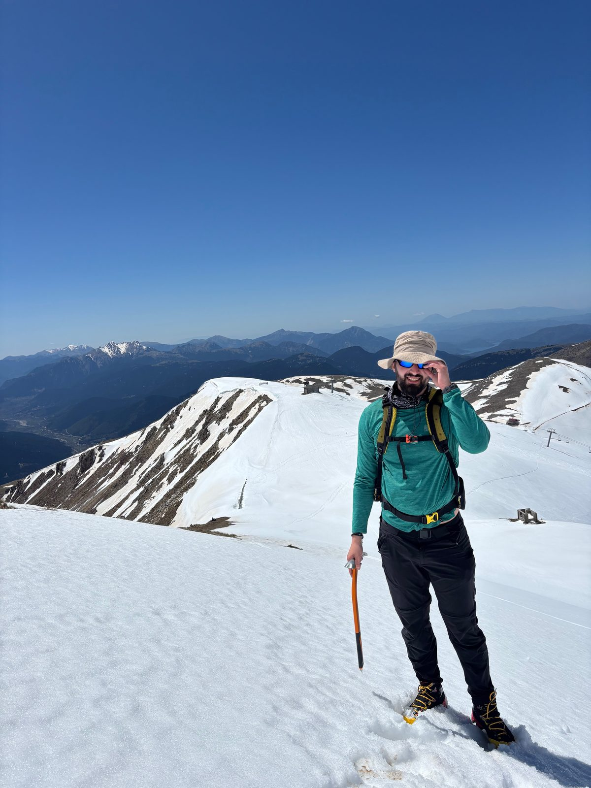
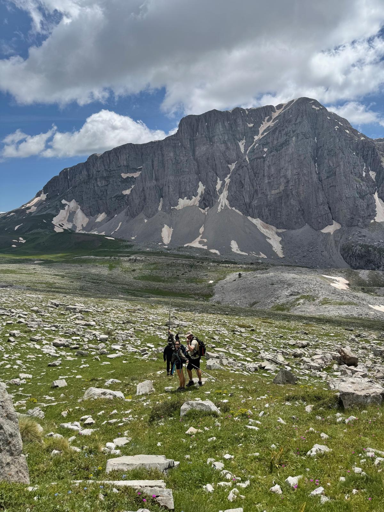
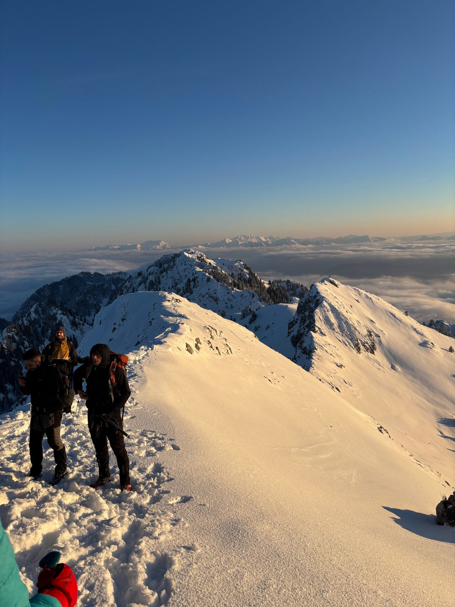

About
I'm broadly interested in signal processing and the theoretical side of machine learning, and I'm fascinated by neuroscience and biomedical engineering. Most of my work sits where those meet — non-invasive neural interfaces, where electrodes on the skin pick up the activity of the motor neurons driving a muscle.
Two threads run through most of it. The first is biophysical modelling and simulation: building anatomically grounded models of how a motor neuron's activity becomes a signal at the skin, and making them fast enough to actually be useful. The second is the inverse problem — recovering the underlying sources back out of the mixture, particularly when the mixing is non-stationary and the usual linear assumptions stop holding.
I'm a PhD researcher at the Imperial–Meta Wearable Neural Interfaces Research Centre, advised by Dario Farina and Stefanos Zafeiriou, working at the intersection of EMG, machine learning and human–computer interaction. I'm currently a Research Scientist Intern at Meta Reality Labs.
Before Imperial I did my MSc in Computer Science at EPFL, where I worked with Grigorios Chrysos and Volkan Cevher on the properties of deep polynomial neural networks. Before that I studied Computer Science in Athens and spent a couple of years writing software — the first engineering hire at a mobility startup, then on an EU Horizon project building an RDF store for terabyte-scale geospatial queries.
Research
Motor unit decomposition
Recovering the spike trains of individual motor neurons from high-density surface EMG. I've worked on injecting biophysical forward models directly into the source separation objective, on relaxing the linearity assumptions that break during dynamic contractions, and on building the benchmark the field was missing.
Forward modelling & operator learning
Simulating the volume conductor between muscle fibre and electrode is accurate but far too slow to sit inside an optimisation loop. I train physics-informed networks and neural operators that learn the solution map across varying anatomy and boundary conditions, turning the forward model into something differentiable and fast enough to invert.
Representation learning for biosignals
What is the right tokenisation for a signal whose information lives across many frequency scales at once? Recent work on multi-scale residual vector quantisation suggests that high-fidelity tokenisation — not model size — is the binding constraint on biosignal foundation models, and that one tokeniser family can span EEG, EMG and ECG.
Robust decoding for wearables
Models that work beautifully within one recording session degrade the moment the sleeve comes off and goes back on. I've worked on interpretable domain adaptation that models electrode shift as a physical transformation over the array, and on which electrode subsets actually matter for gesture recognition.
Publications
Preprints & under review
NeuroRVQ: Multi-Scale Biosignal Tokenization for Generative Foundation Models
Under review, NeurIPS
HarmonICA: Quasi-Linear ICA for Motor Unit Decomposition during Dynamic Contractions
Under review, NeurIPS
2026
Neural operators for varying geometry in the forward EMG model
ICLR 2026 Workshop on AI and Partial Differential Equations
Green's Neural Operator with Neumann conditions for EMG volume conductor modelling
ICLR 2026 Workshop on AI and Partial Differential Equations
2025
MUniverse: A Simulation and Benchmarking Suite for Motor Unit Decomposition
NeurIPS 2025, Datasets & Benchmarks Track
A Biophysical-Model-Informed Source Separation Framework for EMG Decomposition
EMBC 2025 — IEEE Engineering in Medicine and Biology Society Oral
2024
Modelling variation in the forward EMG model
NeurIPS 2024 Workshop on Data-driven and Differentiable Simulations (D3S3)
Spatial Adaptation Layer: Interpretable Domain Adaptation for Biosignal Sensor Array Applications
arXiv preprint
Tucker Decomposition for Interpretable Neural Ordinary Differential Equations
ICLR 2024 Workshop on AI4DifferentialEquations in Science
Tackling electrode shift in gesture recognition with HD-EMG electrode subsets
ICASSP 2024 — IEEE International Conference on Acoustics, Speech and Signal Processing
* Equal contribution. Full list on Google Scholar.
Projects
BIND — Biophysically Informed Neural Decomposition
A framework that decomposes EMG by inverting an anatomically accurate forward model rather than separating sources blindly. Combines MRI-derived anatomy, generative modelling, and gradient-based optimisation to recover motor neuron activity and neuromuscular properties without labels.
MUniverse
The first large-scale standardised benchmark for neural source separation from EMG: a simulation stack, a curated dataset library spanning synthetic, hybrid and experimental recordings with ground-truth spikes, and a unified set of tasks and containerised baselines. Presented at NeurIPS 2025.
Mind the Path
Computer vision over Copernicus satellite imagery to find hiking trails that no one has mapped, cutting a process that normally takes cartographers years. Won first place out of roughly 100 teams at the 3rd European Cassini Hackathon in 2022. The idea later grew into a company, Caius.
Background
Awards
Teaching
Teaching assistant for Signals & Control (Imperial), and Data Structures, Database Systems and Artificial Intelligence (University of Athens).
Outside the lab
Outside the PhD I mostly try to get information out of my head rather than more of it in.
Usually that means rock and mountains. Entry-level mountaineer, a lot of amateur mileage. If an easy day at the crag or a proper full-day hike sounds like your thing, send me a message.
Two things reliably calm me down: yoga, and chicken kontosouvli — I'd argue both could count as mindfulness.


